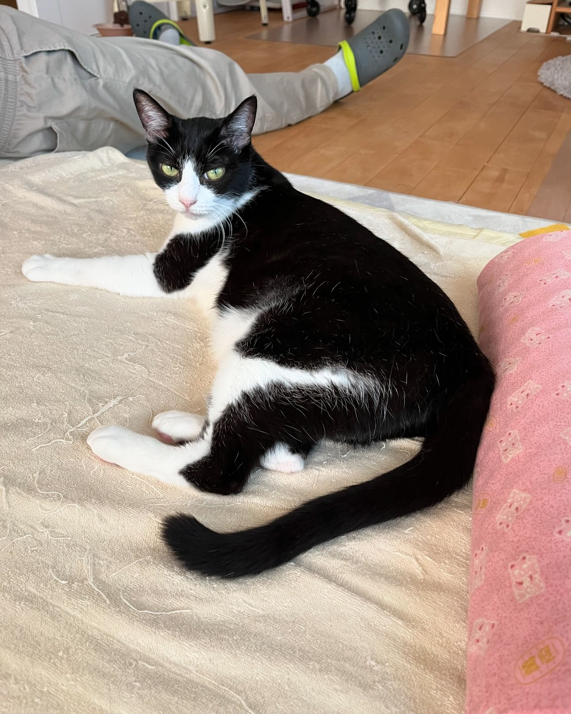

sirens.sea
17h
I'm genuinely going to try and be less of a bah humbug this year ‚ú®‚ú®üëÄ But I also won't be reposting anything even remotely Christmasy anytime soon... It's too early for me and makes me sad ü´∂üèª
16
3
0
jimowczarski
10h
Milwaukee Bucks try to snap a 4-game losing streak tonight:
⛑️injury report
üë•starters
üí∞odds
and more üßµ below NBAThreads
2
14
1
thewhitesponge
9h
It doesn't matter if you have a degree (or not).
What matters is if you have the curiosity for it
2
jason_from_ontario
14h
I was over the moon to find a Toad with sparkle in his eye, and just hanging out above it, a Great Horned owl, probably judging the whole scene.üê∏ü¶âüê∏ü¶âüê∏.

2